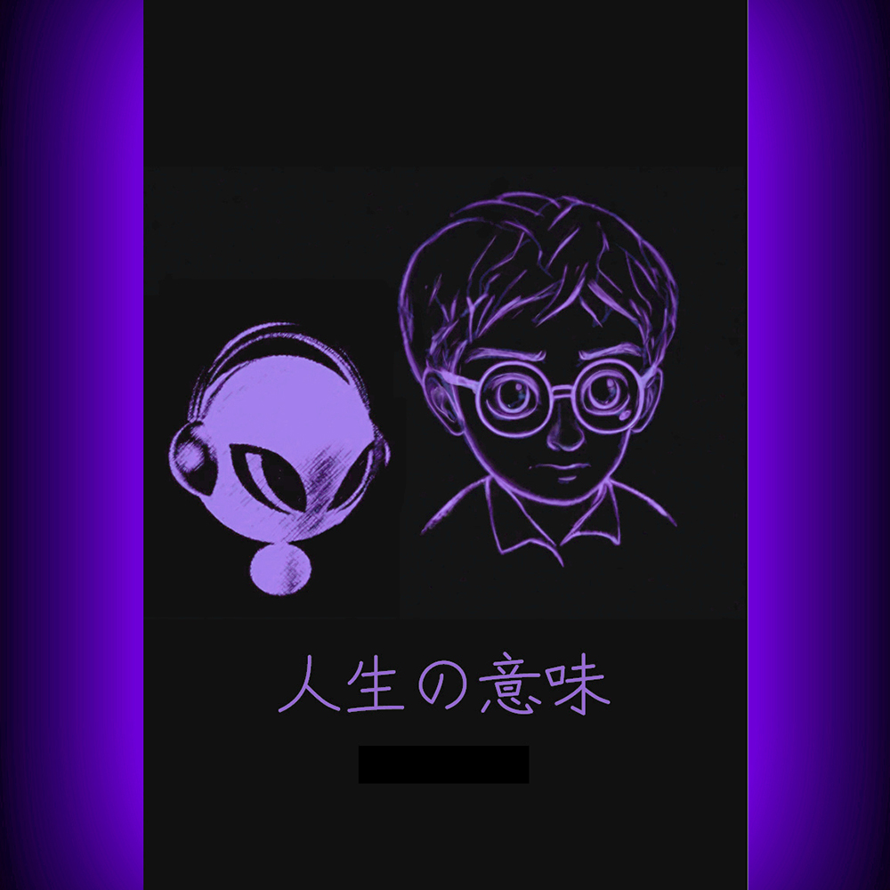

Favorite
00:00
00:00
「第四十一章」不明天體
「第四十二章」天外訊號
「第四十三章」鏡中故人
「第四十四章」撲朔迷離
「第四十五章」時空折射
「第四十六章」生物演算
「第四十七章」他者連線
「第四十八章」弦外有音
「第四十九章」超級金屬
「第五十章」星空幕布
「第五十一章」不速之客
「第五十二章」天機洩露
「第五十三章」暗意識體
「第五十四章」中央起義
「第五十五章」將計就計
「第五十六章」人性方舟
「第五十七章」潛能測序
「第五十八章」集群腦區
「第五十九章」後發制人
「第六十章」逝者使命
「第六十一章」意識牢籠
「第六十二章」棋逢對手
「第六十三章」六位一體
「第六十四章」自然法則
「第六十五章」繁星彼岸
「第六十六章」應急預案
「第六十七章」生死防線
「第六十八章」自行變軌
「第六十九章」斷翅求生
「第七十章」殊途同歸
「第七十一章」忍者現身
「第七十二章」宇宙之上
「第七十三章」終極球賽
「第七十四章」同舟共濟
「第七十五章」聖母贊歌
「第七十六章」熵的贖回
「第七十七章」開天辟地
「第七十八章」末位乘客
「第七十九章」白夜降臨
「第八十章」破繭成蝶
1
2